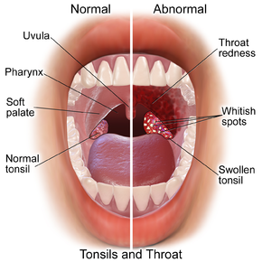

Tonsillitis

CAUSES
The two types of tonsillitis are:
- Viral tonsillitis: Most cases (up to 70 percent) of tonsillitis are caused by a virus such as cold or flu (influenza).
- Bacterial tonsillitis (strep throat): Other cases of tonsillitis are caused by group A Streptococcus bacteria. Bacterial tonsillitis is commonly called strep throat.
SYMPTOMS
Common symptoms include:
- Sore or scratchy throat
- Pain or difficulty swallowing
- Red, swollen tonsils and throat
- Whitish spots on the tonsils, or a white, yellow or gray coating on the tonsils
- Fever above 100.4 degrees
- Swollen lymph nodes (glands on the sides of your neck below your ears)
- Stomachache or vomiting (more frequently in younger children)
DIAGNOSIS
To diagnosis tonsillitis, your doctor will:
- Examine your throat for redness, swelling or white spots on the tonsils
- Ask about other symptoms you’ve had, such as a fever, cough, runny nose, rash or stomachache
- Look in your ears and your nose for other signs of infection
- Feel the sides of your neck to see if the lymph nodes are swollen and tender
TREATMENTS
The treatment you receive depends on the infection’s cause. While the symptoms of viral tonsillitis and bacterial tonsillitis can be similar, their treatments are different.